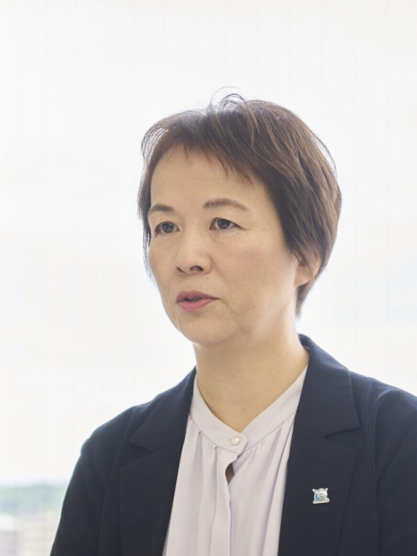
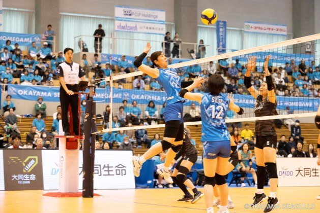
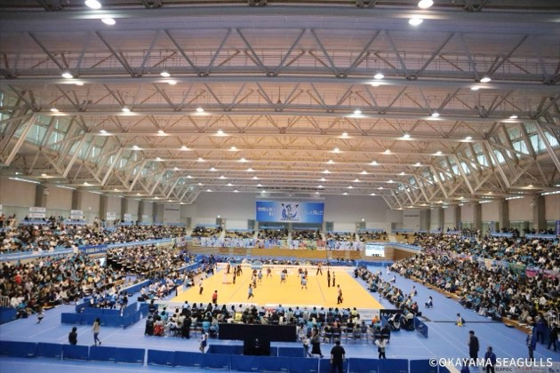
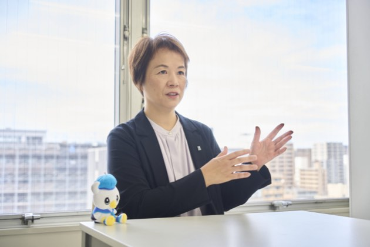
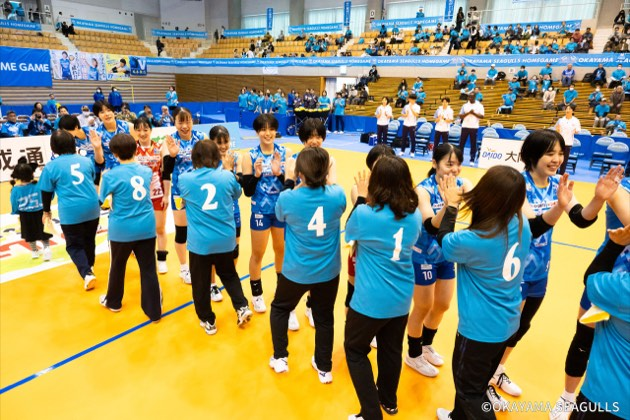
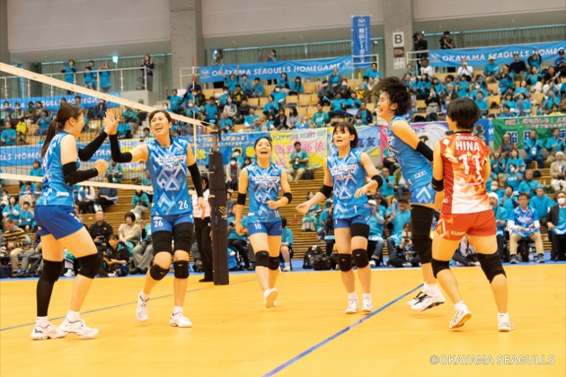
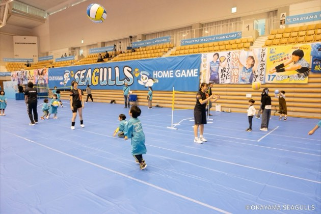
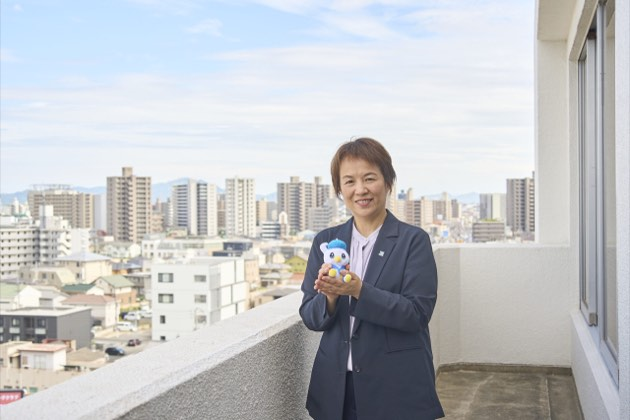
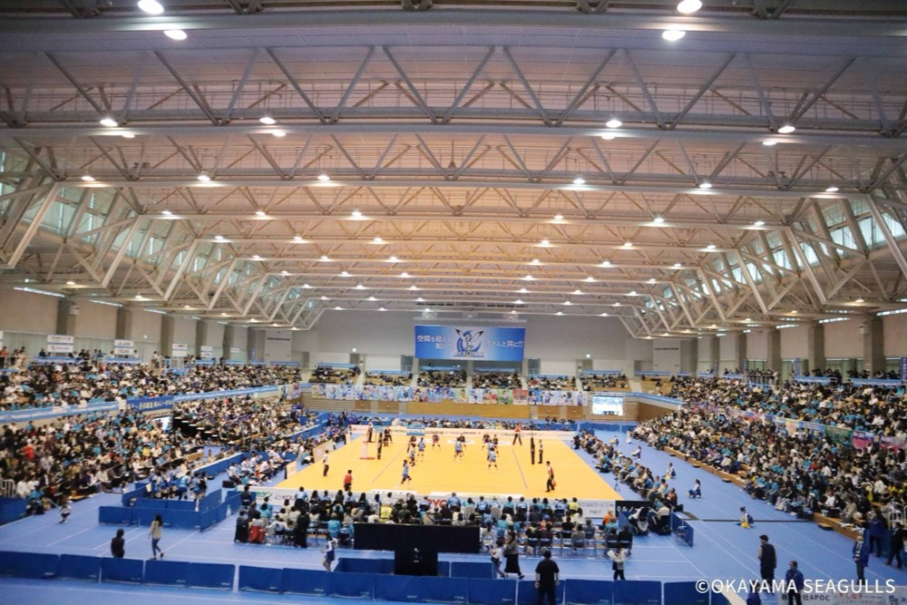

地域と共に羽ばたく、岡山シーガルズの挑戦
髙田 さゆりsayuri takata
岡山シーガルズ株式会社 代表取締役
1971年滋賀県出身。1993年関西外国語大学卒業後、株式会社東芝へ入社し女子バレーボール部マネージャーに着任。1999年の休部を機にチームのクラブ化へ奔走し、運営会社(現・岡山シーガルズ株式会社)の立ち上げに参画。長年マネージャーとして現場を支え、取締役を経て2026年3月に代表取締役に就任。
企業サイトを見るCHAPTER 01
実業団の休部から始まったプロクラブチームへの茨の道
Q東芝女子バレーボール部の休部から、どのようにして現在の岡山シーガルズが誕生したのでしょうか?
A私たちの原点は、1999年に前身である東芝女子バレーボール部が休部になったことにあります。当時は実業団チームが主流の時代でしたが選手やスタッフ全員が「河本監督のもとでバレーボールを続けたい、クラブチームとして再出発したい」という強い意志を持っていました。しかし、後ろ盾のないゼロからのスタートは想像を絶するほど過酷なものでした。立ち上げ当初は資金が全くなく選手たちにスポーツドリンクすら買ってあげられない状況でした。そのためマネージャーが大きなヤカンで毎日毎日お茶を沸かし、それを冷まして練習場へ運んでいたのを今でも鮮明に覚えています。その後、富山県での国体強化期間を経て、監督の出身地でありバレーボール熱が非常に高く歴史の深い岡山県へと拠点を移すことになりました。新参者として伝統ある土地に飛び込むことへの厳しさもありましたが、
この逆境こそが、現在の地域に深く根ざしたシーガルズの強い絆を生み出す第一歩となりました。
Q髙田社長は選手ではなく、最初からマネージャーとしてチームを支えてこられたそうですが、そのきっかけは何だったのですか?
A昔読んだ歴史の本に登場する石田三成の「三献茶」のエピソードに深く感銘を受けたことがきっかけです。豊臣秀吉に対して、最初はぬるめのお茶をたっぷり出し、二杯目はやや熱めのお茶を少し、三杯目には熱いお茶を少しだけ出すという、相手の状況や体調を思い量る気配りの話です。このおもてなしと思いやりの精神に強い衝撃を受け
CHAPTER 02
断らない地域活動が生み出す、約350社との強固な絆
Q岡山シーガルズの事業の特徴や他の実業団チームにはない強みはどこにありますか?
A私たちは特定の母体企業を持たない純粋なクラブチームとして運営しています。現在では地元岡山を中心に約350社ものスポンサー企業様、あるいは多くのファンの方々に支えられています。私たちの最大の強みであり特徴は地域活動への徹底的な取り組みです。河本監督の「人は人でしか成長しない」という強い方針のもと、バレーボール教室はもちろん、ストレッチ教室やご年配の方向けに椅子から立ち上がる運動を指導する健康教室、食育活動、SDGsの取り組みなどスポーツの枠を超えた活動を年間を通じて行っています。そして、これらの地域からのご依頼に対して、私たちは基本的に「絶対に断らない」という姿勢を貫いています。他チームでは練習時間を優先して断るケースも多いと聞きますが、シーガルズは選手・スタッフ全員が地域に出向き、地域の方々と直接触れ合うことを何よりも大切にしています。
Q地域活動にそれほどまでに注力する理由はどこにあるのでしょうか?
A単にバレーボールの試合で勝つことだけが私たちの存在意義ではないと考えているからです。選手が直接地域に赴き、汗を流して住民の方々と触れ合うことでコートの上だけでは得られない人間的な成長や深い信頼関係が生まれます。例えば、おじいちゃんやおばあちゃんが練習の合間に孫やひ孫の写真を見せてくれて一緒に笑い合う。そんな温かい交流そのものが、すでに単なる「スポーツ教室」の枠を超えた価値を持っています。お祭りに参加して選手が綿菓子を作ったり地域の公民館で一緒にゲームをしたり。こうした地道な活動を通じて子どもたちや地域の方々がスクールコーチや選手の名前を一人ずつ覚えて応援してくださるようになります。地域の方々に育てていただいているという感謝の念と、住民の皆様にとってシーガルズが「生活の一部」として愛される存在になること。これこそが、私たちの唯一無二の優位性なのです。







CHAPTER 03
代表就任としての使命とSVリーグ優勝への青写真

Q2026年3月に代表取締役に就任されましたが、現在の心境やまず着手されたことについて教えてください。
A長年マネージャーとして現場を最も近い場所で見てきたからこそ会社としての「持続可能な基盤作り」が私の最大の使命だと感じています。代表に就任して真っ先に着手したのは企業としての基礎作り、つまり組織の再構築です。創業当時は本当に資金繰りが厳しく、選手への給料の支払いもままならない不安定な時代もありました。そこから20数年をかけて、現在は決まった日にしっかりと給料を支払い賞与を支給できるような「当たり前の企業体裁」を整えることができました。選手やスタッフが将来にわたって安心して上を目指せるようにまずは組織の透明性を高めて経営基盤を強固にすることに全力を注いでいます。
Q共に戦う選手やスタッフといった「人」に対する思いをお聞かせください。
A選手やスタッフは、クラブにとって何にも代えがたい宝です。先日、当時苦労を共にした元選手が会社を訪ねてくれた際、今の組織体制の話をすると「本当によかったですね」と涙を流して喜んでくれました。彼女たちの頑張りがあったからこそ今のシーガルズがあります。だからこそ選手たちの引退後の「セカンドキャリア」支援には特に注力しています。現在も多くの引退選手がフロントやスクールコーチとして活躍していますが、今後は約350社のスポンサー企業様とのネットワークを活かし、引退後も岡山に残り、様々な業種で安心して長く働けるような具体的な就職支援ルートを早期に確立させたいと考えています。
Q今後の目標や、拠点である岡山という地域に対する思いについてお聞かせください。
Aまずは最高峰の「SVリーグ」での優勝を真剣に目指しています。長丁場となるリーグ戦を戦い抜くため、また選手の怪我のリスクを分散させるためにもベトナムのナショナルチームの選手を受け入れるなど、新しい戦力の補強や体制の変革にも柔軟に挑戦しています。岡山という地域はバレーボールへの理解が非常に深く、温かい場所です。ここで地元の皆様に育てていただいたクラブが、日本一という結果を残して恩返しをすること。正式なプロリーグとして歩みを進める中で、会社としても強固な経営体質を確立し、スポーツを通じて地域の雇用を守り、関わるすべての人々が岡山で幸せに暮らせる未来を作ることが、これからの私の大きな使命です。